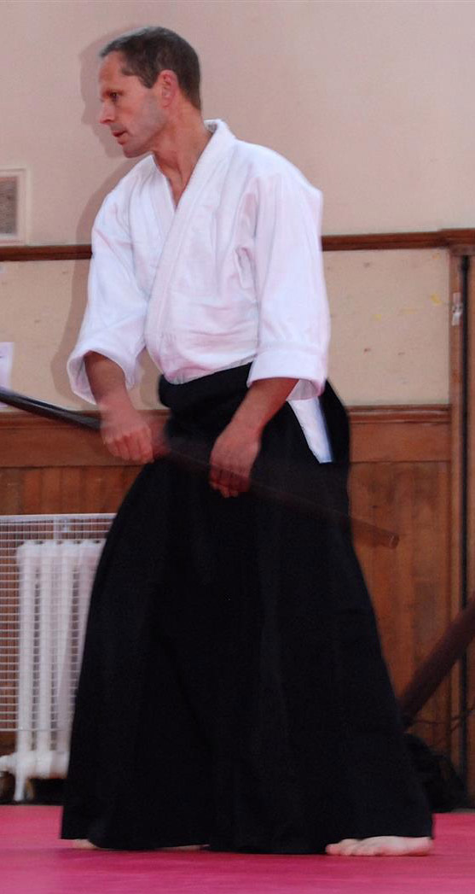

    <div class="container">
        <div class="row">
            <div class="col-lg-8 col-lg-offset-2 col-md-10 col-md-offset-1">
<h3>Neil Blacknell</h3>
<br>
<div class="shell">
<p padding-left="10px">Neil began Aikido in 1983 at the Brighton Aikikai. He subsequently lived in Japan for 14 years, studying at the World Aikido Headquarters, Hombu Dojo, and received his 3rd dan from the Second Doshu, Kisshomaru Ueshiba, in 1993.</p>
<p>Since 1999, he has lived in Edinburgh, where he founded Azami-Kai.</p>
</div>
</div>
</div>
</div>

